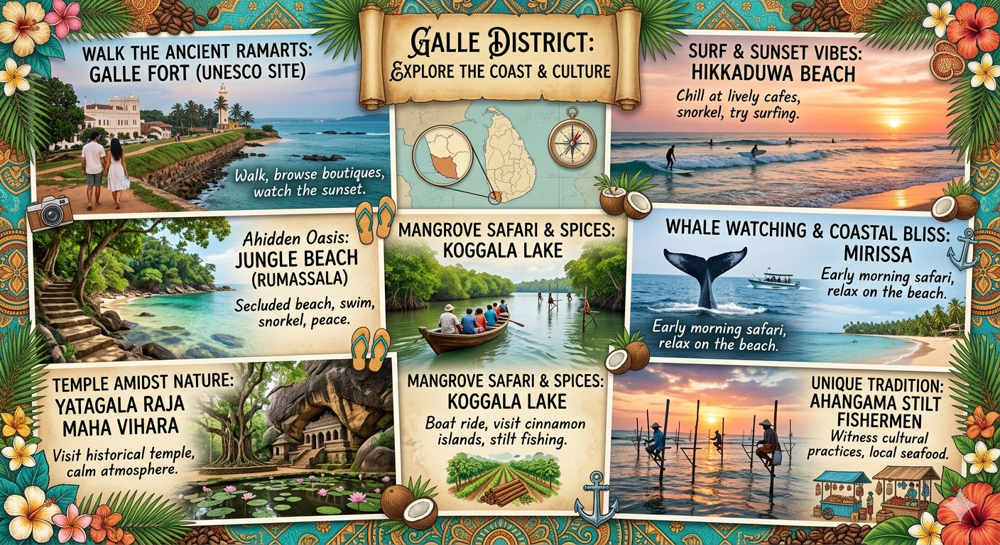
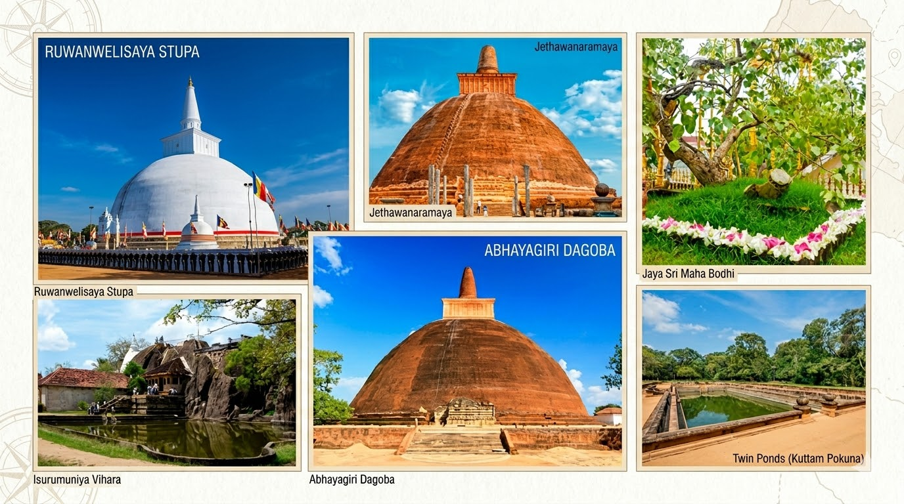
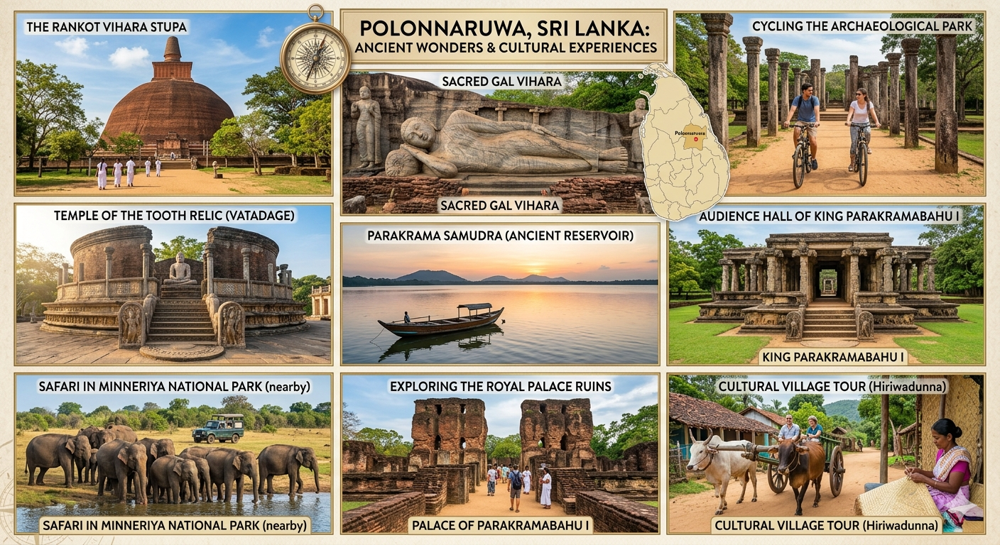
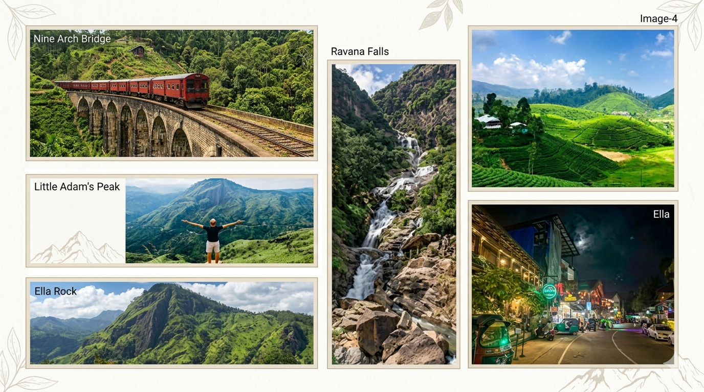
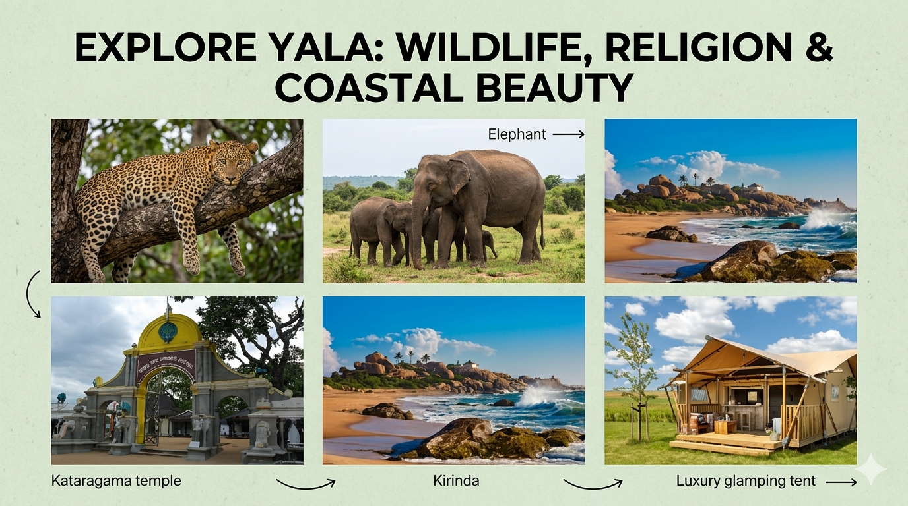

Top Destinations in Sri Lanka
Below is a curated list of must-visit places—covering culture, nature and beaches.
Kandy
Why visit: Temple of the Tooth, Peradeniya Botanical Gardens, cultural events like Esala Perahera.
Best time: Dec–Apr.

Galle
Why visit: UNESCO heritage Galle Fort, colonial architecture, coastal walks.
Best time: Nov–Apr.
Sigiriya
Why visit: Iconic rock fortress with ancient frescos and panoramic views.
Best time: Early morning or late afternoon.
Nuwara Eliya
Why visit: Tea plantations, cool climate and colonial-era buildings.
Best time: Feb–Apr.

Anuradhapura
Why visit: Ancient stupas, sacred Bo tree and archaeological ruins.
Best time: Year-round (mornings recommended).

Polonnaruwa
Why visit: Well-preserved medieval city and UNESCO heritage monuments.
Best time: Sep–Apr.

Ella
Why visit: Scenic hikes, Nine Arch Bridge and tea scenery.
Best time: Jan–Mar.

Yala National Park
Why visit: Wildlife safaris—leopards, elephants, diverse birdlife.
Best time: Feb–Jul.

Colombo
Why visit: Capital city with markets, museums and seaside promenade.
Best time: Dec–Mar.